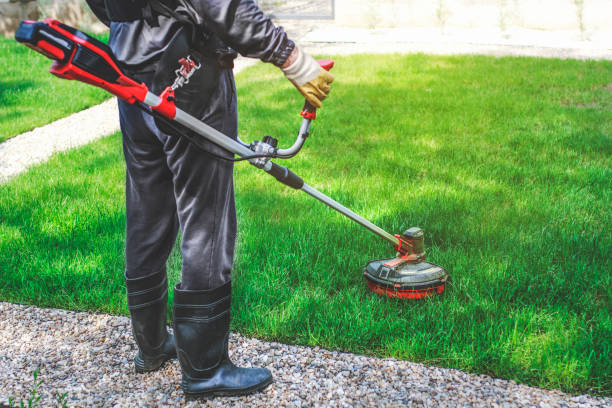

Premium lawn care in Sweeny Texas : Offering expert mowing, fertilization, and weed control services to keep your lawn lush and healthy throughout the year.
Click Here To Call Us (877) 848-1711At Smot Lawn Care, we provide exceptional lawn care services in Sweeny Texas dedicated to transforming your outdoor spaces into lush, green, and inviting landscapes. Our team of skilled professionals specializes in comprehensive lawn maintenance solutions tailored to meet the unique needs of your property.
We offer expert lawn mowing, precise fertilization, and effective weed and pest control. Utilizing advanced techniques and high-quality products, we ensure your lawn remains healthy and vibrant throughout the year. Whether you need seasonal aeration to enhance root growth or targeted treatments to address specific issues, we have the expertise and tools to deliver outstanding results.
Understanding that each lawn is different, we provide customized care plans designed to address your specific needs. From soil testing and topdressing to sod installation and irrigation system management, our approach is tailored to enhance the health and appearance of your lawn.
At Smot Lawn Care, we pride ourselves on delivering reliable and affordable lawn care services. Our goal is to provide you with a beautiful, well-maintained lawn without the hassle. Contact us today to schedule a consultation and discover how we can help you achieve the lawn of your dreams in Sweeny Texas .
Residential & commercial lawn care
Quality services at affordable prices
Immediate 24/ 7 emergency services


Maintaining a lush, green lawn in Sweeny Texas requires proper watering techniques. At Smot Lawn Care, we understand that timing and frequency are crucial for optimal lawn health. In general, you should water your lawn deeply but infrequently. This encourages root growth and helps your grass withstand drought conditions.
For most lawns in Sweeny Texas watering once or twice a week is ideal. Aim to provide about 1 to 1.5 inches of water per week, including rainfall. Early morning is the best time to water, ideally between 6 and 8 AM. This allows the grass to absorb moisture before the heat of the day causes it to evaporate. Morning watering also reduces the risk of fungal diseases, which can thrive in damp, shaded conditions.
Adjust your watering schedule based on weather conditions and the specific needs of your lawn. During cooler months or periods of heavy rainfall, you may need to water less frequently. Conversely, during hot, dry spells, your lawn might require additional watering to stay healthy. Use a rain gauge or a simple container to measure how much water your lawn is receiving.
By following these guidelines and monitoring your lawn’s response, you can ensure a vibrant and healthy lawn throughout the year. For personalized advice and expert lawn care services in Sweeny Texas trust Smot Lawn Care to keep your outdoor spaces looking their best.
Residential & commercial lawn care
Quality services at affordable prices
Immediate 24/ 7 emergency services
Installing new sod is an investment in your landscape, and proper care is essential for a successful establishment. Our lawn care for new sod services focuses on delivering the right nutrients, watering schedules, and maintenance required to ensure your new grass takes root and thrives. Our team has extensive experience with sod installation and can provide tailored care that suits the sod type and local climate conditions. From initial watering techniques to ongoing maintenance, we guide you through every step to achieve a lush, green lawn that enhances your property.

Lawn diseases can wreak havoc on the health and appearance of your lawn. Our lawn disease treatment services are designed to identify and address various lawn diseases quickly and effectively. Our horticulturists conduct thorough evaluations and utilize advanced treatments to restore your lawn’s health. By choosing lawn care, you gain access to our expertise in disease management, ensuring your lawn returns to its full potential, green and healthy.

Our lawn maintenance packages in Sweeny Texas are designed to meet every need at an affordable price. We offer tiered options that include various services such as mowing, fertilization, edging, and pest control tailored to fit your lawn’s specific needs. With our packages, you receive consistent care throughout the year, ensuring your lawn remains in pristine condition. Choose our comprehensive maintenance plans for the best care possible, allowing you to enjoy a beautiful lawn without the hassle.

Maintaining an attractive landscape for your business is crucial to creating a positive impression. Our commercial lawn care services are tailored to meet the specific needs of businesses, institutions, and organizations. We provide comprehensive landscaping and lawn maintenance solutions that include mowing, trimming, fertilization, and seasonal cleanups. Our flexible scheduling and commitment to excellence ensure that your commercial property looks its best at all times. Partnering with us means entrusting your lawn care to a passionate team dedicated to enhancing the visual appeal of your commercial spaces.
Lawn edging is essential for maintaining a neat, polished appearance for your garden. Our lawn edging services will help define the borders of your lawn and flower beds, creating clean lines that enhance your landscaping design. At lawn care, we use various materials—from natural stone to decorative metal—to achieve the desired effect while ensuring durability and functionality. Our team is detail-oriented, working meticulously to create an attractive separation between your turf and flower beds, walkways, or driveways. By choosing our lawn edging services, you invest in the visual appeal and structure of your landscape, making your outdoor space not just beautiful but also functional.
For expert lawn care, finding local specialists who understand your environment is crucial. Our team at lawn care comprises passionate lawn care specialists dedicated to providing the best service possible. We are familiar with the local climate, conditions, and common lawn issues, enabling us to create customized care plans that cater to your specific lawn needs. Our specialists are equipped with extensive knowledge about innovative care techniques and products, ensuring your lawn receives premier treatment tailored to its unique status. When you choose our lawn care specialists, you're choosing expertise and a dedication that results in a stunning and healthy lawn.

Consistent care is the key to a thriving lawn. Our weekly lawn care services in Sweeny Texas ensure your lawn receives the attention it needs to remain healthy and vibrant. With our dedicated team at lawn care, we offer regular mowing and maintenance services tailored to the growth pattern and seasonal needs of your lawn. Our professionals arrive on schedule, equipped with the latest tools and techniques to maintain your landscaping's beauty and health. By opting for our weekly lawn care services, you free yourself from the ongoing worry of lawn maintenance while enjoying an effortlessly pristine outdoor space.
.jpg)
Every lawn is unique, requiring a tailored approach to care. Our custom lawn care plans are designed with your specific needs in mind, ensuring each aspect of your lawn care is perfectly suited for optimal growth and health. At lawn care, we begin with comprehensive assessments of your lawn, taking into account soil health, grass type, and local environmental conditions. Based on this evaluation, our experts will create a personalized lawn care strategy that includes fertilization schedules, aeration timings, watering plans, and pest management techniques. If you're looking for a tailored, hands-on approach to lawn care, our custom plans ensure your outdoor space flourishes all season long.
Years Experience
Expert Technicians
Satisfied Clients
Compleate Projects
At Smot Lawn Care, we are dedicated to providing exceptional lawn care services across Sweeny Texas . Our commitment to excellence and customer satisfaction sets us apart as the premier choice for all your lawn care needs. With years of experience in the industry, our team of professionals is equipped with the skills and knowledge to deliver top-quality results for every client.
Our comprehensive lawn care solutions include expert mowing, precise fertilization, and effective weed and pest control. We use advanced techniques and high-quality products to ensure your lawn remains lush, green, and healthy throughout the year. Whether you need seasonal aeration, soil testing, or customized treatment plans, we tailor our services to meet the unique needs of your lawn.
What makes Smot Lawn Care stand out is our unwavering dedication to reliability and affordability. We understand the importance of a beautiful, well-maintained lawn, and we strive to provide exceptional service without breaking the bank. Our transparent pricing and commitment to quality ensure that you receive outstanding value for your investment.
Choosing Smot Lawn Care means partnering with a trusted local provider who understands the specific needs of Sweeny Texas lawns. Contact us today to schedule a consultation and discover how our expert team can help you achieve the lawn of your dreams. Experience the difference with Smot Lawn Care – where your satisfaction is our top priority.
If you’re searching for “lawn care services near me” look no further than our dedicated team of lawn care specialists. We understand that a lush, green lawn can greatly enhance your home’s curb appeal and value. Our professional lawn care services are tailored to meet the unique needs of your yard, ensuring that your grass remains healthy and vibrant throughout the seasons. With years of experience and a deep understanding of local environmental conditions, our team employs advanced techniques and high-quality products that support your lawn’s growth and health. Choosing us means opting for reliability, efficiency, and meticulous attention to detail, helping your lawn be the envy of the neighborhood.
Your home is your sanctuary, and nothing enhances its beauty like a well-maintained lawn. Our residential lawn care services in Sweeny Texas are designed to provide homeowners with comprehensive care, ensuring your lawn flourishes throughout the seasons. From routine mowing to specialized treatments like aeration and fertilization, our team applies industry-leading practices that promote growth and health. We focus on understanding the specific needs of your lawn, which allows us to provide customized solutions tailored to your landscape. Our affordable pricing and dedication to customer satisfaction make us the preferred choice among homeowners in Sweeny Texas . Choose us for reliable service, professional staff, and the kind of care your property deserves — because a beautiful lawn adds value to your home!
Maintaining a beautiful lawn shouldn't mean breaking the bank. At lawn care, we believe in providing affordable lawn care options without sacrificing quality. Our lawn care services in Sweeny Texas are competitively priced, allowing you to enjoy a lush, green lawn that makes your home stand out. We offer flexible packages tailored to your budget, covering everything from mowing to seasonal treatments. Our team is dedicated to finding the most effective and economical solutions for lawn care, ensuring your investment goes as far as possible. With our expert team and cost-efficient strategies, you can relax knowing your lawn is in great hands—making us the top choice for wallet-friendly lawn care services in Sweeny Texas .
When it comes to lawn care, choosing a local company means selecting a team that understands your specific soil types, weather conditions, and regional challenges. Our local lawn care business is committed to serving our community with personalized care and expertise. We offer a variety of services ranging from standard mowing to more advanced treatments, ensuring your lawn is prepared for every season. Our deep-rooted knowledge of Sweeny Texas landscapes enables us to provide innovative solutions tailored to meet your unique challenges. We pride ourselves on using eco-friendly practices to protect your home and community. Choose us for superior local service, commitment to sustainability, and unparalleled results!
When it comes to finding the best lawn care services our company stands out for several reasons. We combine expertise, dedication, and customer satisfaction to deliver outstanding results. Our team consists of certified lawn care professionals equipped with the latest tools and technologies. From routine maintenance to specialized services like aeration and fertilization, we offer comprehensive solutions tailored to your lawn's needs. Moreover, our commitment to excellence is reflected in our numerous positive reviews and testimonials from satisfied customers. Choosing our services means choosing a path to a greener, healthier lawn that you can enjoy year-round.
Consistent lawn mowing is vital to the health and appearance of your yard. Our professional lawn mowing services cater to homeowners who want to maintain an immaculate lawn without putting in the effort themselves. We offer scheduled mowing services that fit your calendar while making sure the height and health of your grass are kept in check. Our expert team utilizes cutting-edge equipment, resulting in clean, precise cuts that promote healthy growth. Beyond the basic mowing, we also provide additional services like edging and trimming to give your lawn the polished look it deserves. With our dedication to superior service and attention to detail, you can trust lawn care to keep your lawn looking its best.
Selecting professional lawn care services is an investment in the health and beauty of your property. Our highly-trained specialists understand the complexities of lawn maintenance and are dedicated to achieving the best results for your yard. Using industry-leading practices and products, we offer a full suite of services including fertilization, aeration, pest control, and more. We take the time to assess your lawn’s condition, customize our approach, and monitor progress to ensure your complete satisfaction. With our professional care, you’ll enjoy a lush, vibrant lawn that enhances your home’s value and aesthetics.
The secret to a thriving lawn lies beneath the surface — in the soil. Our lawn fertilization services focus on providing your grass with the nutrients it needs to flourish. We offer tailored fertilization plans based on soil analysis and the specific requirements of your lawn. By using high-quality products and effective techniques, we ensure your grass achieves optimal growth, color, and vigor. We believe in sustainable practices, minimizing environmental impact while enhancing the liveliness of your lawn. Choose us for our expertise in lawn vitality and our commitment to your satisfaction. Trust our professionals to bring out the best in your landscape!
Weeds can be a persistent nuisance, undermining the health and appearance of your lawn. Our lawn weed control services in Sweeny Texas are designed to target and eliminate unwanted weeds effectively and safely. We utilize specialized techniques and high-quality herbicides to provide both pre-emergent and post-emergent treatments, ensuring that your lawn stays weed-free throughout the growing season. Understanding the local weed species common we tailor our approach to effectively tackle even the toughest invaders while protecting your desirable grass species. Enjoy a pristine lawn free from weeds, and experience the beauty of a well-tended yard.
Aeration is a crucial process for maintaining a healthy lawn, as it allows essential nutrients, air, and water to reach the roots. Our lawn aeration services in Sweeny Texas are designed to revitalize your grass by alleviating soil compaction and promoting healthier growth. We utilize state-of-the-art equipment and industry best practices to ensure effective results. We recommend aeration as part of a comprehensive lawn care plan that includes fertilization and weed control for the best outcome. Choose us for our expertise, commitment to your lawn's health, and the benefits of a thriving, green landscape!
Seasonal changes bring unique challenges for lawn maintenance. Our seasonal lawn care services in Sweeny Texas are designed to tackle these challenges head-on, ensuring your lawn thrives year-round. From spring clean-ups and fertilization to fall aeration and winterization, our comprehensive services ensure that your lawn is adequately cared for through every season. We tailor our approach to address the specific conditions and requirements of each season, guaranteeing that your lawn receives the care it needs when it needs it the most.
Seeding is an important step in establishing a lush and healthy lawn. Our lawn seeding services provide the best methods to ensure successful germination and robust growth. Whether you are looking to patch bare spots, overseed for thickness, or establish a new lawn, our team uses high-quality seeds suited for the local climate and soil conditions. We adopt professional techniques to guarantee your seeds have the best chance of thriving. Choose us for expert lawn care that fosters lasting beauty and strength in your outdoor space.
Consistent lawn care maintenance is key to achieving a thriving lawn. Our comprehensive lawn care maintenance services cover all bases, from mowing and trimming to fertilization and pest control. We develop custom maintenance plans that cater to the specific needs of your lawn, ensuring it stays healthy and beautiful throughout the year. With our expertise and commitment to excellence, we take the hassle out of lawn maintenance, allowing you to enjoy your outdoor space without worry.
A beautiful lawn is often complemented by stunning landscaping, and our lawn care and landscaping services aim to create harmonious outdoor spaces. We blend expert lawn care with artistic landscaping to give your property a unique aesthetic appeal. Our experienced team offers comprehensive solutions including garden design, planting, hardscaping, and regular lawn maintenance. We work closely with you to understand your vision and bring it to life. Choose us for integrated services that enhance your outdoor environment and provide long-lasting beauty!
Concern for the environment should not interfere with lawn care aspirations. Our organic lawn care services in Sweeny Texas utilize only natural, non-toxic products to create beautiful, sustainable lawns. At lawn care, our organic approach to lawn care emphasizes eco-friendly practices that protect the health of your family, pets, and the planet. We provide organic fertilization, weed control, aeration, and pest management solutions that yield striking results without harmful chemicals. Our knowledgeable team ensures that every treatment is tailored to the specific needs of your lawn while promoting biodiversity and soil health. If you're seeking a greener way to maintain your lawn, our organic lawn care services are the perfect choice.
A gorgeous lawn can quickly become a disaster due to pest infestations. Our lawn pest control services are designed to identify and eliminate common lawn pests efficiently and effectively. From grubs to insects, our trained specialists use targeted treatments that minimize damage while protecting beneficial organisms in your yard. We believe in a strategic approach to pest control, emphasizing prevention and education so you can maintain a healthy lawn. With our expertise, you won’t have to worry about pests ruining your outdoor space; we’ll ensure your lawn remains healthy and vibrant all season long.
Proper hydration is vital to maintaining a vibrant lawn. Our lawn irrigation services are designed to ensure your lawn receives the right amount of water, optimizing growth and appearance. We provide customized irrigation solutions tailored to your lawn's specific needs and local water regulations. Our team of experts designs and maintains efficient systems that promote water conservation while delivering consistent moisture to your grass. Choose us for professionalism, innovation, and a healthier lawn that flourishes sustainably!
Preventing weeds from overtaking your lawn is crucial for maintaining a lush, healthy landscape in Sweeny Texas . At Smot Lawn Care, we understand the challenges of weed control and are here to help you keep your lawn in top condition.
Weed prevention begins with a strong, healthy lawn. The best defense against weeds is a dense turf that crowds out invaders. Regular mowing, ideally at a height of 2.5 to 3 inches, helps your grass grow thick and reduces weed establishment. Avoid cutting more than one-third of the grass height at a time to prevent stress and promote stronger growth.
Fertilization is another key strategy. Properly fertilizing your lawn provides the essential nutrients for vigorous growth, making it harder for weeds to compete. Use a balanced fertilizer and follow a schedule appropriate for the season and your grass type.
Aeration is also important. By alleviating soil compaction and improving root growth, aeration helps your lawn better absorb water and nutrients, enhancing its resilience against weeds. Aim to aerate your lawn at least once a year, especially in high-traffic areas.
Mulching around garden beds and using pre-emergent herbicides can further prevent weed growth. These methods create a barrier that stops weed seeds from germinating while protecting your lawn from unwanted weeds.
For effective, tailored weed control solutions in Sweeny Texas trust Smot Lawn Care to provide expert advice and services that ensure your lawn remains beautiful and weed-free. Contact us today to learn more about maintaining a pristine, healthy lawn.
Sweeny is a city in Brazoria County, Texas, United States, the westernmost incorporated town in the county. The population is 3,626 as of 2020. The city's motto is 'A City with Pride'. The city was once known as Adamston.
Yes, we offer customized fertilization plans to promote healthy lawn growth .
You can reach us by phone or visit our website to schedule services or request a free quote in Sweeny Texas .
Yes, we install efficient irrigation systems to keep your lawn healthy and hydrated .
Smot Lawn Care provides mowing, fertilization, aeration, weed control, and lawn maintenance services in Sweeny Texas .
Improving drainage can involve aeration, topdressing, and creating proper grading. Our experts can evaluate your lawn .
Our commitment to quality service, eco-friendly practices, and personalized care sets us apart .
Yes, we provide seasonal services including spring clean-ups and fall leaf removal in Sweeny Texas .
Preparing your lawn involves fertilization, aeration, and keeping it free of debris before winter sets .
Yes, Smot Lawn Care provides professional lawn care services for commercial properties .
Bare patches may require reseeding or sod installation. Our team can assess and recommend the best approach in Sweeny Texas .
Yes, we provide organic lawn care solutions that are safe for children and pets .
Professional lawn care enhances curb appeal, promotes healthy growth, and saves you time and effort .
Most lawns should be mowed every 1-2 weeks, depending on the growth rate and season .
We recommend grass types suited to local climate conditions, including Kentucky bluegrass and fescue for Sweeny Texas .
The best times for fertilization are in early spring and fall when grass is actively growing .
Lawn aeration involves perforating the soil to allow air, water, and nutrients to penetrate roots. It's essential for a healthy lawn in Sweeny Texas .
Absolutely! We can help you design a beautiful, functional lawn tailored to your space and lifestyle .
The ideal mowing height varies by grass type, but generally, keeping it 2.5 to 3 inches promotes healthy growth .
Regular watering, mowing at the right height, and addressing any visible issues can help maintain your lawn in Sweeny Texas .
Signs include thin patches, bare spots, or overall decline in lawn health. Our team can assess and recommend reseeding .
You can request a free estimate by contacting Smot Lawn Care via phone or through our website in Sweeny Texas .
Yes, our team can diagnose and treat common lawn diseases to restore your grass's health .
Brown spots can be caused by drought, disease, or pests. Our experts can diagnose the issue and recommend solutions in Sweeny Texas .
Yes, we offer integrated pest management solutions to protect your lawn from harmful pests in Sweeny Texas .
Yes, we offer mulch installation to help retain moisture and suppress weeds in your lawn .
Yes, we offer flexible scheduling options for regular lawn care services tailored to your needs .
Water when grass blades start to wilt or turn a dull color; typically, lawns need about 1 inch of water per week .
Regular maintenance, proper mowing, and using pre-emergent herbicides can help prevent weed growth .
Yes, we offer effective weed control services to keep your lawn healthy and weed-free in Sweeny Texas .
Our experienced team uses best practices and high-quality products to ensure your lawn receives the best care in Sweeny Texas .
“The team at Smot Lawn Care provided exceptional service in Sweeny Texas . They revitalized my lawn beautifully. Their expertise and commitment to quality are evident. I highly recommend their services!” – Jeff A.
Profession
“If you need top-quality lawn care in Sweeny Texas Smot Lawn Care is the way to go. Their team delivered excellent results, and my lawn has never looked better. Very pleased with their work!” – Paul R.
Profession
“Smot Lawn Care did a fantastic job on my lawn in Sweeny Texas . Their attention to detail and commitment to quality are outstanding. I’m thrilled with the results and their professional service!” – Catherine M.
Profession